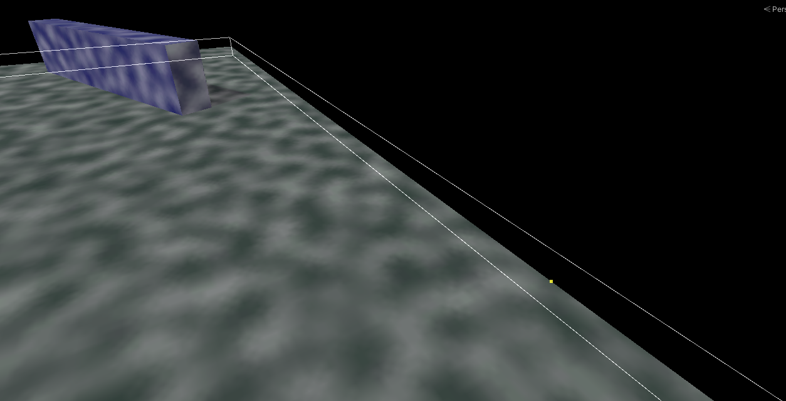

World Bounds
World Bounds define the rectangular extent of your playable world on the fog plane. They are required by several features, and can also be used directly to black out everything outside your world.
When You Need Bounds
You must define World Bounds if you use any of:
- Minimap Generation
- The World Bounds black-out feature (below)
- Texture Storage fog sample mode
Defining Bounds
With any of those options enabled, a Bounding Box Handle gizmo appears while the Fog Of War World is selected. Drag it to fit your world. You can also set the bounds numerically with the Bounds center and extent fields on the component.
The World Bounds Feature
Enabling Use World Bounds renders everything outside the bounds as solid black — a quick way to mask off the area beyond your playable space.
- World Bounds Soften Distance softens the boundary edge.
- World Bounds Influence controls how strongly the black-out is applied.
